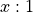

Outcome Class¶
In Outcome Analysis we’ll look at the responsibilities and collaborators of Outcome objects.
In Design Decision – Object Identity we’ll look at how we can implement the notion of object identity and object equality. This is important because we will be matching Outcome objects based on bets and spinning the Roulette wheel.
We’ll look forward to some other use cases in Looking Forward. Specifically, we know that players, games, and tables will all share references to single outcome objects. How do we do this properly?
In Outcome Design – Complex we’ll detail the design for this class.
In Outcome Design – Simple we’ll detail a simpler design using
@dataclass definitions from the standard library.
In Outcome Deliverables we’ll provide a list of classes and tests to be built.
We’ll look at a Python programming topic in Message Formatting. This is a kind of appendix for beginning programmers.
Outcome Analysis¶
There will be several hundred instances of Outcome objects on a given
Roulette table. The bins on the wheel, similarly, collect various Outcome instances
together. The minimum set of Outcome instances we will
need are the 38 numbers, Red, and Black. The other instances will add details
to our simulation.
In Roulette, the amount won is a simple multiplication of the amount bet
and the odds. In other games, however, there may be a more complex
calculation because the house keeps 5% of the winnings, called the “rake”.
While it is not part of Roulette, it is good to have our Outcome
class designed to cope with these more complex payout rules.
Also, we know that other casino games, like Craps, are stateful. An Outcome
may change the game state. We can foresee reworking this class to add in
the necessary features to change the state of the game.
While we are also aware that some odds are not stated as , we won’t include these other kinds of odds in this initial design. Since all Roulette odds are , we’ll simply assume that the denominator is always 1. We can foresee reworking this class to handle more complex odds, but we don’t need to handle the other cases yet.
The fundamental consideration here is comparing two instances
of a Outcome. One will be part of a Bet,
the other instance will be part of the Wheel. We need
to know if the bet’s Outcome matches the wheel’s Outcome.
How does all object comparison work in Python?
Hint: The default rules aren’t helpful.
The rules reveal the foundations of object state and identity. While this class is seemingly insignificantly trivial, it exposes central Python concepts.
Design Decision – Object Identity¶
Our design must match Outcome objects. We’ll be testing objects
for equality.
The player will be
placing bets that contain Outcome instances; the table will be
holding bets. The wheel will select the winning Outcome instances. We need a
simple test to see if two objects of the Outcome class are the same.
Was the Outcome for a bet equal to the Outcome
contained in a spin of the wheel?
It turns out that this comparison between objects has some subtlety to it.
Here’s the naïve approach to class definition that doesn’t include any provision for equality tests.
Naïve Class Definition
>>> class Outcome:
... def __init__(self, name: str, odds: int) -> None:
... self.name = name
... self.odds = odds
This seems elegant enough. Sadly, it doesn’t work out when we need to make equality tests.
In Python, if we do nothing special, the default
special method, __eq__(), will simply compare
the internal object id values. These object id values are unique to each distinct object,
irrespective of the attribute values.
This default behavior of objects is shown by the following example:
Equality Test Failure
>>> oc1 = Outcome("Any Craps", 8)
>>> oc2 = Outcome("Any Craps", 8)
>>> oc1 == oc2
False
>>> id(oc1) == id(oc2)
False
>>> hash(oc1) == hash(oc2)
False
>>> oc1 is oc2
False
This example shows that we can have two objects that appear equal, but don’t compare
as equal. While we can see they have the same attribute values,
The is test shows they are distinct objects.
This makes them not equal according to the default methods inherited from object.
However, we would like to have two of these objects test as equal.
Actually, we want more than simple equality. We need to have them behave identically when used in sets and dictionaries.
More than equal¶
We’ll be creating collections of Outcome objects, and we may need to create
sets or maps where hash codes are used in addition to the simple equality tests.
Hash Codes?
Every object has a hash code. The hash code is simply an integer. It is a summary of the bits that make up the object. Python computes hash codes and uses these as a quick test for set membership and dictionary keys.
If two hash codes don’t match, the objects can’t possibly be equal. Further comparisons aren’t necessary. If two hash codes do match, there’s a possibility the two objects are equal.
The rare case of equal hash values for unequal objects is called a “hash collision.” It’s a consequence of digesting large and complex objects into small numeric values.
As we look forward, the Python set and
dict depend on a __hash__() method and an
__eq__() method of each object in the collection.
Hash Code Failure
>>> hash(oc1)
270386794
>>> hash(oc2)
270392959
Note
Exact ID values will vary.
This shows that two objects that look the same to us can have distinct hash codes.
Clearly, this is unacceptable, since we want to be able to create a set of
Outcome objects without having things that look like repeats.
Layers of Meaning¶
The lesson here is there are three distinct layers of meaning for comparing objects to see if they are “equal”. Here are the layers:
Objects have the same hash code. We can call this “hash equality”.
We need the
__hash__()method for several objects that represent the sameOutcometo have the same hash code. When we put an object into a set or a dictionary, Python uses thehash()function, implemented by the__hash__()method.Sometimes the hash codes are equal, but the object attributes aren’t actually equal. This is called a hash collision, and it’s rare but not unexpected.
If we don’t implement
__hash__(), each instance is considered distinct making equality tests and set membership awkwardly wrong.Objects compare as equal. We can call this “attribute equality”.
This means that the
__eq__()method returnsTrue. When we use the == operator, this is evaluated by using the__eq__()method. This must be overridden by a class to implement attribute equality.If we don’t implement this, the default implementation of this method isn’t too useful for our
Outcomeobjects.Variables are two references to the same underlying object. We can call this “identity”.
We can test that two objects are the same by using the is comparison operator. This uses the internal Python identifier for each object. The identifier is revealed by the
id()function.When we use the is comparison, we’re asserting that the two variables are references to the same underlying object. This is most often used when comparing an object against the
Noneobject. In that exceptional case, we often usex is None.
How can we get the __hash__() and __eq__() implemented properly?
We have several choices. We’ll start by looking at the typing.NamedTuple class.
Named Tuples¶
The naïve class definition shown above didn’t work out well. A significant improvement
is to use the built-in tuple class. This can bind a name and a
payoff amount together.
Look at the following example; this shows behavior we would like to see:
>>> oc1 = Outcome("Any Craps", 8)
>>> oc2 = Outcome("Any Craps", 8)
>>> oc1 == oc2
True
>>> id(oc1) == id(oc2)
False
>>> hash(oc1) == hash(oc2)
True
>>> oc1 is oc2
False
This is the behavior we want. Two distinct instances of an outcome compare as equal when all of their individual attribute values are equal.
We can leverage the typing.NamedTuple to provide this equality
test for our unique classes.
from typing import NamedTuple
class Outcome(NamedTuple):
name: str
odds: int
This definition provides us with a minimal definition of an outcome with all of the right behaviors.
The type hints in this class definition allow us to use mypy to confirm our design is likely to work. This is an important part of static analysis to be sure that the code is likely to work reliably and consistently.
This isn’t the only available solution to building __hash__() and __eq__()
methods. We can also use a dataclasses.dataclass.
Frozen Dataclasses¶
We can leverage the dataclasses.dataclass to provide an equality
test that’s similar to the features of a typing.NamedTuple.
This gives us a useful equality test for our unique classes.
from dataclasses import dataclass
@dataclass(frozen=True)
class Outcome_d:
name: str
odds: int
This definition provides us with a minimal definition of an outcome with all of the right behaviors.
>>> oc1 = Outcome("Any Craps", 8)
>>> oc2 = Outcome("Any Craps", 8)
>>> oc1 == oc2
True
>>> id(oc1) == id(oc2)
False
>>> hash(oc1) == hash(oc2)
True
>>> oc1
Outcome(name='Any Craps', odds=8)
For the purposes we have in mind, both a typing.NamedTuple and a
frozen dataclasses.dataclass have similar behaviors. There
are differences, of course, but they don’t impact anything we’re going to
do.
We’ll use the dataclasses in a number of later exercises. For
that reason, we’ll start with a frozen dataclass as a way to
define the Outcome class with useful equality comparisons.
Special Method Implementation¶
Instead of using the available standard library class definitions, we can implement a few special methods that will provide useful equality tests. This is more complex than using one of the built-in library classes, but can be helpful for understanding how Python works.
We note that each instance of Outcome has a distinct Outcome.name value,
it seems simple enough to compare names. This is one sense of “equal” that
seems to be appropriate.
We can define the __eq__() and __ne__() special methods to provide
useful equality tests:
When comparing with a string value, compare the
self.nameattribute.When comparing with an
Outcomeinstance, compareself.nameandother.name.
Similarly, we can compute the value of the __hash__() method to use only the string name,
and not the odds. This seems elegantly simple to return the hash of the string name
rather than compute a hash.
The definition for __hash__() in section 3.3.1 of the Language Reference Manual
tells us to
do the calculation using a modulus based on sys.hash_info.width.
This is the number of bits, the actual value we want to use is
We’d use sys.hash_info.modulus.
Additional Outcome Design Thoughts¶
We’ll be looking at Outcome objects in several contexts.
We’ll have them in bins of a wheel as winning outcomes from each spin of the wheel.
We’ll have them in bets that have been placed on the table.
The player will have a set of outcomes they can bet on.
All these uses of Outcome objects forces us to consider an interesting
question:
How do we implement Don’t Repeat Yourself (DRY) when creating
Outcomeobjects?
If a player always bets on black,
we don’t want to include the odds when the player names the “black” Outcome instance.
Repeating the odds violates the DRY principle.
What are some alternatives?
Global Outcome Objects. We can declare global variables for the various outcomes and use those global objects as needed. Generally, globals variables are often undesirable because changes to those variables can have unexpected consequences in a large application. Global constants are no problem at all. A pool of
Outcomeinstances are proper constant values used to create bins and bets. There would be a lot of them, and they would all be assigned to distinct variables. Because of the way Python module imports work, we can define all of these in a single module and share the pool throughout the application.Outcome Factory. We can create an object which is a Factory for individual
Outcomeobjects. When some part of the application – for example, the player – needs anOutcomeobject, the factory provides the object. The Factory can create use the unique name to locate the completeOutcomeinstance. This allows a player to request the “Black”Outcomeinstance. If we identifyOutcomeinstances by their names, we can avoid repeating the payout odds. When we look at the Roulette Wheel, this seems to be the perfect factory forOutcomeinstances. A player can request the domain of allOutcomeinstances from the wheel.Singleton Outcome Class. A Singleton class creates and maintains a single instance of itself. This involves some unpleasant meta-programming to change the way object creation works. It’s not particularly difficult, but it seems needless when the other alternatives appear to be simpler. This has the profound disadvantage that each distinct outcome would need to be a distinct subclass of
Outcome. This is an unappealing level of complexity. Further, it doesn’t solve the DRY problem of repeating the details of each Outcome.
A Factory seems like a good way to proceed. It can maintain a collection,
and provide values from that collection. We can use class strings to identify
Outcome objects. We don’t have to repeat the odds.
We’ll look forward to this in later chapters. For now, we’ll start with the basic class.
In the next section we’ll look at a complete and detailed definition of
the Outcome class.
Outcome Design – Complex¶
This is the design for an Outcome class separate from
any dataclass definition. This is rather complex.
The simpler approach is described below under Outcome Design – Simple.
-
class
Outcome¶ Outcomecontains a single outcome on which a bet can be placed.In Roulette, each spin of the wheel has a number of
Outcomeobjects with bets that will be paid off. For example, the “1” bin has the following winningOutcomeinstances: “1”, “Red”, “Odd”, “Low”, “Column 1”, “Dozen 1-12”, “Split 1-2”, “Split 1-4”, “Street 1-2-3”, “Corner 1-2-4-5”, “Five Bet”, “Line 1-2-3-4-5-6”, “00-0-1-2-3”, “Dozen 1”, “Low” and “Column 1”.All of thee above-named bets will pay off if the wheel spins a “1”. This makes a Wheel and a Bin fairly complex containers of
Outcomeobjects.
Fields¶
-
Outcome.name Holds the name of the
Outcome. Examples include"1","Red".
-
Outcome.odds¶ Holds the payout odds for this
Outcome. Most odds are stated as 1:1 or 17:1, we only keep the numerator (17) and assume the denominator is 1.
We can use name to as the basis for computing hash codes and doing equality tests.
Constructors¶
-
Outcome.__init__(self, name: str, odds: int) → None - Parameters
name (str) – The name of this outcome
odds (int) – The payout odds of this outcome.
Sets the instance name and odds from the parameter name and odds.
Methods¶
For now, we’ll assume that we’re going to have global instances of each
Outcome. Later we’ll introduce some kind of Factory.
-
Outcome.winAmount(self, amount: float) → float Multiply this
Outcome’s odds by the given amount. The product is returned.- Parameters
amount (float) – amount being bet
-
Outcome.__eq__(self, other) → bool¶ Compare the
nameattributes ofselfandother.
-
Outcome.__ne__(self, other) → bool¶ Compare the
nameattributes ofselfandother.
-
Outcome.__hash__(self) → int¶ Hash value for this outcome.
- Returns
The hash value of the name,
hash(self.name).- Return type
int
A hash calculation must include all of the attributes of an object that are essential to it’s distinct identity.
In this case, we can return
hash(self.name)because the odds aren’t really part of what makes an outcome distinct. Each outcome is an abstraction and a string name is all that identifies them.The definition for
__hash__()in section 3.3.1 of the Language Reference Manual tells us to do the calculation using a modulus based onsys.hash_info.width. That value is the number of bits, the actual value we want to use issys.hash_info.modulus, which is based on the width.
-
Outcome.__str__(self) → str Easy-to-read representation of this outcome. See Message Formatting.
This easy-to-read String output method is essential. This should return a
Stringrepresentation of the name and the odds. A form that looks like1-2 Split (17:1)works nicely.- Returns
String of the form
name (odds:1).- Return type
str
-
Outcome.__repr__(self) → str¶ Detailed representation of this outcome. See Message Formatting.
- Returns
String of the form
Outcome(name=name, odds=odds).- Return type
str
Outcome Design – Simple¶
A simpler variation on the Outcome class can be
based on @dataclass(frozen=True).
See above, in the fields section, the two fields required.
The default methods created by the @dataclass decorator should work perfectly.
The __str__() method will have to be written based on the description above,
under methods.
This should pass all of the unit tests described in the Outcome Deliverables section.
Example Unit Test Case¶
The Outcome class doesn’t have too many features.
The unit tests should reflect the core simplicity.
def test_outcome():
o1 = Outcome("Red", 1)
o2 = Outcome("Red", 1)
o3 = Outcome("Black", 2)
assert str(o1) == "Red 1:1"
assert repr(o2) == "Outcome(name='Red', odds=1)"
assert o1 == o2
assert o1.odds == 1
assert o1.name == "Red"
assert o1 != o3
assert o2 != o3
This seems to cover almost everything imaginable with respect to the Outcome
class.
Outcome Deliverables¶
There are two deliverables for this exercise. Both will have Python docstrings.
The
Outcomeclass. This can be put into aroulette.pyfile. A single file can include all of the class definitions.Unit tests of the
Outcomeclass. This can be doctest strings inside the class itself, or it can be a separatetest_outcome.pymodule.The unit test should create a three instances of
Outcome, two of which have the same name. It should use a number of individual tests to establish that twoOutcomewith the same name will test true for equality, have the same hash code, and establish that thewinAmount()method works correctly.We’ve provided an example as part of this section, to clarify what the test case should include.
Message Formatting¶
For the very-new-to-Python, there are few variations on creating a
formatted message string. The str() function makes use of a class
__str__() method to provide the class-unique string.
The repr() function makes use of the class __repr__() method
to provide the class unit representation.
The str() function is intended to produce easy-to-read strings.
The repr() function is intended to provide detailed strings,
often in Python syntax.
Generally, we simply use something like this.
def __str__(self):
return f"{self.name:s} ({self.odds:d}:1)"
The format f-string uses :s and :d as detailed specifications
for the values to interpolate into the string. There’s a lot
of flexibility in how numbers are formatted.
There’s another variation that can be handy.
def __repr__( self ):
return f"{self.__class__.__name__:s}(name={self.name!r}, odds={self.odds!r})"
This exposes the class name as well as the attribute values.
We’ve used the !r specification to request the internal representation
for each attribute values. For a string, it means it will be explicitly
quoted.